Линейный длинноходовый магнитоэлектрический привод постоянного тока
1. Конструкция привода
Выполнявшиеся расчеты [5, 6] электромагнитных приводов постоянного тока с втяжными якорями различной формы продемонстрировали, что относительно большой ход якоря (отношение хода якоря к длине привода) не может быть получен при неизменном достаточно большом усилии, развиваемом приводом. Поэтому было решено дополнить конструкцию постоянными магнитами, чтобы избавиться от вышеуказанного недостатка. В результате был создан линейный длинноходовый привод, конструкция которого показана на рис. 1.1.
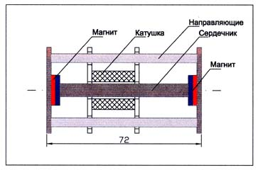
Рис. 1.1. Конструкция линейного длинноходового магнитоэлектрического привода постоянного тока.
Привод состоит из катушки и рамы, способных перемещаться друг относительно друга. Рама включает цилиндрический стальной сердечник, на концах которого закреплены постоянные дисковые магниты, и стальные направляющие, замыкающие магнитный поток. Вдоль сердечника по направляющим может двигаться цилиндрическая катушка (соленоид) в немагнитном корпусе (или наоборот, катушка закреплена неподвижно, а рама движется). Направление усилия, развиваемого приводом, и, соответственно, направление перемещения рабочего органа определяются полярностью тока в катушке.
Для подтверждения работоспособности конструкции и дальнейшей проверки правильности расчетов был сделан макет привода, внешний вид которого показан на рис. 1.2.
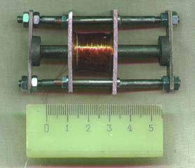
Рис. 1.2. Внешний вид макета длинноходового магнитоэлектрического привода постоянного тока: стальной сердечник - длина 60 мм, диаметр 6 мм; магниты состава неодим-железо-бор дисковые диаметром 14 мм высотой 4 мм; соленоид - бескаркасная намотка медным проводом, длина 20 мм, внешний диаметр 20 мм, диаметр отверстия 8 мм; стальные направляющие - диаметр 4 мм.
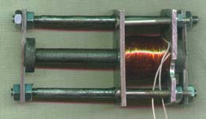 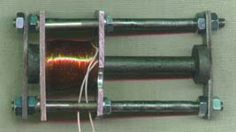
Рис. 1.3. Крайние положения привода.
Максимальный ход макетного варианта привода составляет 36 мм (рис. 1.3). Напряжение питания 12 вольт. Перемещаться может катушка относительно неподвижно закрепленной рамы или рама относительно неподвижно закрепленной катушки. Второй вариант может оказаться предпочтительнее, так как позволяет отказаться от гибких токоподводов. Направление перемещения зависит от полярности питающего напряжения. Привод не имеет фиксированных положений и при снятии питающего напряжения не оказывает сопротивления внешнему воздействию.
2. Расчет допустимой плотности тока в обмотке
От плотности тока в обмотке зависит мощность тепловыделения и, соответственно, температура обмотки. Эта температура не должна превышать допустимой для данной марки провода. Расчет температуры внутри обмотки и, соответственно, допустимой плотности тока в обмотках можно произвести методом конечных элементов [2, 3, 4, 7]. Величина допустимой плотности тока в проводах обмоток зависит от конструкции привода и для катушек с толщиной намотки до 20 ... 30 мм может достигать 5 ... 8 А/мм2 при длительной работе в воздушной среде температурой до 40 0C.
Если фактор упаковки принять равным 0.6, то при плотности тока в обмоточном проводе 5 А/мм2 плотность тока в самой обмотке составит 5 ∙ 0.6 = 3 А/мм2. При этом превышение температуры обмотки над температурой окружающей среды будет не более 60 0C, а теплостойкость изоляции обмоточного провода должна быть примерно 100 0C.
Если плотность тока в проводе обмотки достигает 8.4 А/мм2 (плотность тока в обмоточном проводе 8.4 А/мм2, плотность тока в самой обмотке 5 А/мм2), то превышение максимальной температуры обмотки над температурой окружающей среды при длительной работе может достигать 150 0C. Если режим работы привода повторно-кратковременный (например, время включения - несколько секунд, отношение суммарного времени включения к общему времени работы до 50 %), то такая плотность тока может быть вполне допустимой. При длительных режимах работы привода во включенном состоянии необходимо применять провод с изоляцией повышенной термостойкости (до 200 0C) и пропитку обмотки компаундом с высоким коэффициентом теплопроводности.
При повторно-кратковременных режимах работы, когда время одного включения невелико (порядка нескольких секунд) и отношение суммарного времени включения к общему времени работы мало (порядка 10 %), плотность тока в обмотке (и в обмоточном проводе) может быть существенно увеличена.
3. Расчет и экспериментальная проверка тягового усилия привода
Расчет распределения магнитного поля (рис. 3.1) и возникающих при этом усилий можно произвести методом конечных элементов [2, 3, 4, 7]. В таблице и на рис. 3.2 представлен результат расчета и экспериментальной проверки при плотности тока в обмотке 7.3 А/мм2. Зависимость развиваемого усилия от перемещения одинакова для прямого и обратного хода при изменении полярности тока в катушке.
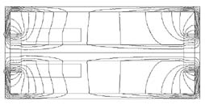 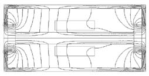 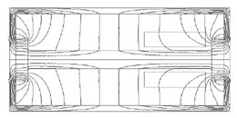
Рис. 3.1. Распределение магнитного поля в приводе при различных положениях катушки (крайнее левое, среднее, крайнее правое).
| Ход катушки, мм | 0 | 2 | 4 | 6 | 8 | 10 | 12 | 14 | 16 | 18 | 20 | 22 | 24 | 26 | 28 | 30 | 32 | 34 | 36 |
| Усилие привода (расчет), Н | 2.176 | 2.001 | 1.884 | 1.773 | 1.668 | 1.556 | 1.449 | 1.338 | 1.231 | 1.126 | 1.035 | 0.956 | 0.898 | 0.857 | 0.844 | 0.864 | 0.932 | 1.080 | 1.384 |
| Усилие привода (эксперимент), Н | 1.8 | - | - | - | - | 1.5 | - | - | - | - | 1.1 | - | - | - | - | 1.0 | - | - | 1.1 |
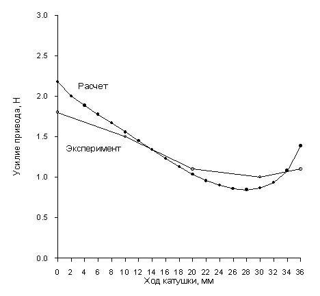
Рис. 3.2. Зависимость усилия, развиваемого приводом, от хода катушки.
Из графика видно, что усилие, развиваемое приводом, не слишком существенно изменяется на всей достаточно большой длине его хода. Согласие расчетных данных с экспериментальными достаточно хорошее.
4. Расчет диаметра обмоточного провода
От диаметра обмоточного провода зависит активное сопротивление соленоида и, следовательно, ток в обмотке при заданном напряжении питания. Выбирая диаметр провода, необходимо добиться требуемой плотности тока в обмотке (для вышеприведенного привода в заданном режиме повторно-кратковременного включения расчетная допустимая плотность тока в обмотке составляет 7.3 А/мм2).
Число витков N провода диаметром D определяется площадью окна обмотки S соленоида и фактором упаковки l:
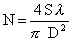
Тогда сопротивление соленоида R может быть рассчитано следующим образом:
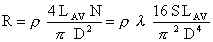
где LAV - средняя длина одного витка, r - удельное электрическое сопротивление обмоточного провода.
Ток I, текущий в обмотке сопротивлением R под действием напряжения U, определяется законом Ома:
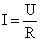
Плотность тока j в обмотке:

Отсюда может быть найден диаметр обмоточного провода:
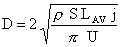
Для цилиндрического соленоида средняя длина одного витка вычисляется по формуле:
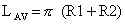
а площадь окна обмотки:
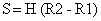
где R2 - внешний радиус соленоида, R1 - радиус отверстия, H - высота.
Для рассматриваемого случая: U = 12 В, j = 7300000 А/м2, R2 = 0.009 м, R1 = 0.004 м, LAV ≈ 0.041 м, S ≈ 0.0001 м2, r ~ 1.67 · 10-8 Ом · м (медный провод), l ≈ 0.6. Тогда:
D ≈ 0.23 мм
N ≈ 1444 витков
R ≈ 24 Ом
I ≈ 0.5 А
Усилие, развиваемое приводом, может быть увеличено за счет увеличения плотности тока в обмотке при соответствующем сокращении относительного времени нахождения обмотки под током. Для этого надо увеличить диаметр обмоточного провода. Если есть запас по развиваемому усилию, то можно соответственно уменьшить плотность тока в обмотке, при этом облегчится тепловой режим работы обмотки привода. Для этого диаметр обмоточного провода следует уменьшить.
Если обмотка представляет собой цилиндрический соленоид, то для ее расчета можно также воспользоваться программой Coil [1].
По вопросам расчета конкретных конструкций привода обращайтесь к автору (см. раздел Контактная информация).
Ссылки:
14.05.2008
Альтернативные источники
энергии
Компьютеры и
Интернет
Магнитные поля
Механотронные системы
Перспективные
разработки
Электроника и
технология